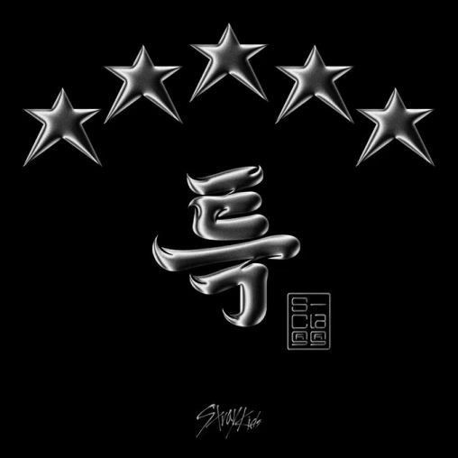

THE TRACK / LYRICRACHA
S-Class（特）
Stray Kids
- ALBUM
- 5-STAR
- RELEASE
- 2023.06.02
- UPDATED
- 2026.08.26
- LANGUAGE
- KOREAN / ENGLISH
- LYRICS
- BANG CHAN, CHANGBIN, HAN
- COMPOSED
- BANG CHAN, CHANGBIN, HAN, CHAE GANGHAE, RESTART
02 / THE VOICES
Part Colors
03 / LYRIC DATABASE
Lyrics
よぎん ソウル とぅくぴょるし
여긴 Seoul 특별시
ここはソウル特別市
すまぬん きじょぐる いるきょっち
수많은 기적을 일으켰지
数多くの奇跡を起こした
かりょじん ぴょるどぅる さい とおるぬん とぅくぴょる
가려진 별들 사이 떠오르는 특별
隠れた星々の間から浮かび上がる特別な光景
ぴょる、ぴょる、ぴょる、ぴょる
별, 별, 별, 별
星、星、星、星
ぴょるらん こっとぅそんい ぴょなもぷち
별난 것투성이 변함없지
変わり者で溢れていて変わらない
ぽぬぁはぬん こり
번화하는 거리
にぎやかな街
こりごりまだ こるりじょくこりぬん こ
거리거리마다 걸리적거리는 거
街ごとにざわめく音
クリーン イット アップ クリーン イット アップ、 ゲット バック
Clean it up clean it up, get back
片付けて 片付けて 下がれ
こんまん ぽんじるる とんとん ぴん かんとん
겉만 번지르르 텅텅 빈 깡통
表面だけ派手で 空っぽの缶
キック イット キック イット キック イット
Kick it kick it kick it
蹴り上げろ 蹴り上げろ 蹴り上げろ
スワーヴィング、アイム スピーディング オン サーペント ロード
Swerving, I’m speeding on Serpent Road
曲がりくねった道をスピードを上げていく
ラグジュリアス ライク アイム アン エス クラス
Luxurious like I’m an S-Class
Sクラスのような贅沢さ
ベスト オブ ザ ベスト オン ファースト クラス
Best of the best on First Class
一級品の中で最高の存在
アイム アップ アバヴ ザ ワールド ソー ハイ
I’m up above the world so high
僕らは世界の上で高く
アイル ビー ゼア シャイニング デイ アンド ナイト
I’ll be there shining day and night
輝き続ける 昼も夜も
ゼイ ワンダー ハウ マイ スポットライト イズ ソー ブライト
They wonder how my spotlight is so bright
みんな不思議に思うんだ 僕のスポットライトの明るさに
カウンティング スターズ
Counting stars
星を数えて
とぅくぴょれ ぴょれ ぴょれ ぴょれ ぴょれ ぴょれ ぴょり
특별의 별의 별의 별의 별의 별의 별의
特別な星々の中で
ぴょるらん のむ
별난 놈
変わり者
ザッツ ミー
That’s me
それが僕だ
ぴょれ ぴょれ ぴょれ ぴょれ ぴょれ ぴょりびょる いり マイ ワーク
별의 별의 별의 별의 별의 별의별 일이 my work
星の数ほどある 僕の仕事
（ブリン ブリン）
(Bling Bling)
（きらきら）
エヴリデイ
Everyday
毎日
ぴっかる ぽんちょく ぴっかる ぽんちょく
빛깔 뻔쩍 빛깔 뻔쩍
カラフルに輝いて カラフルに輝いて
ぴっかる ぽんちょけ クラスぬん とぅく
빛깔 뻔쩍해 class는 특
明るく鮮やかで特別なクラス
ぴっかる ぽんちょく ぴっかる ぽんちょく
빛깔 뻔쩍 빛깔 뻔쩍
カラフルに輝いて カラフルに輝いて
ぴち ぽんじょ とうく ぴんなぬん スター
빛이 번져 더욱 빛나는 star
光がもっと広がって より輝くStar
ひぱぷ すてぷ くむじまぎ ぱるじ とぅくちゅるらん け とぅくき
힙합 스텝 큼지막이 밟지 특출난 게 특기
ヒップホップのステップ 大胆に踏み出すのが僕らの特技
ね ちぷちょろむ とぅなどぅるじ とぅくちぷ
내 집처럼 드나들지 특집
僕の家のように自由に出入りする特集
ちゃごぷしるん あん ぷろうぉ とぅくしる
작업실은 안 부러워 특실
作業室は羨ましくない 特別な場所
とぅくしるどぅくしるごりょ とくぽじょぎん とぅくちん
득실득실거려 독보적인 특징
得たり失ったり 目立つ特徴
とぅりぼんどぅりぼん おじゅんっとじゅん てぃおむってぃおむ ぽぬん えどぅり
두리번두리번 어중떠중 띄엄띄엄 보는 애들이
きょろきょろする 烏合の衆 適当な奴らが
ぽんちょくぽんちょく ぴんなぬん こっとぅるまん ぽみょん たるりょ ぽるし ノー ノー
뻔쩍뻔쩍 빛나는 것들만 보면 달려 버릇이 no no
ぴかぴか輝くものばかり見て走っていく
ぴんなぬん こる ちょっきぼだん ぴんなぬん ちょぎ
빛나는 걸 쫓기보단 빛나는 쪽이
輝くものを追いかけるよりも 輝く側になる方が
とぅぇぬん け ふぉるしん ぽむ ちゃぷき ぴょね シャイン ライク ア ダイヤモンド ケイ？
되는 게 훨씬 폼 잡기 편해 Shine like a diamond k?
ずっと簡単だろ ダイヤモンドのように輝けよ いいか？
スワーヴィング、アイム スピーディング オン サーペント ロード
Swerving, I’m speeding on Serpent Road
曲がりくねった道をスピードを上げていく
ラグジュリアス ライク アイム アン エス クラス
Luxurious like I’m an S-Class
Sクラスのような贅沢さ
ベスト オブ ザ ベスト オン ファースト クラス
Best of the best on First Class
一級品の中で最高の存在
アイム アップ アバヴ ザ ワールド ソー ハイ
I’m up above the world so high
僕らは世界の上で高く
アイル ビー ゼア シャイニング デイ アンド ナイト
I’ll be there shining day and night
輝き続ける 昼も夜も
ゼイ ワンダー ハウ マイ スポットライト イズ ソー ブライト
They wonder how my spotlight is so bright
みんな不思議に思うんだ 僕のスポットライトの明るさに
カウンティング スターズ
Counting stars
星を数えて
とぅくぴょれ ぴょれ ぴょれ ぴょれ ぴょれ ぴょれ ぴょり
특별의 별의 별의 별의 별의 별의 별의
特別な星々の中で
ぴょるらん のむ
별난 놈
変わり者
ザッツ ミー
That’s me
それが僕だ
ぴょれ ぴょれ ぴょれ ぴょれ ぴょれ ぴょりびょる いり マイ ワーク
별의 별의 별의 별의 별의 별의별 일이 my work
星の数ほどある 僕の仕事
（ブリン ブリン）
(Bling Bling)
（きらきら）
エヴリデイ
Everyday
毎日
ぴっかる ぽんちょく ぴっかる ぽんちょく
빛깔 뻔쩍 빛깔 뻔쩍
カラフルに輝いて カラフルに輝いて
ぴっかる ぽんちょけ クラスぬん とぅく
빛깔 뻔쩍해 class는 특
明るく鮮やかで特別なクラス
ぴっかる ぽんちょく ぴっかる ぽんちょく
빛깔 뻔쩍 빛깔 뻔쩍
カラフルに輝いて カラフルに輝いて
ぴち ぽんじょ とうく ぴんなぬん スター
빛이 번져 더욱 빛나는 star
光がもっと広がって より輝くStar
アイ フィール ライク ザ ブライテスト スター ぴち そだじぬん ぱむ
I feel like the brightest star 빛이 쏟아지는 밤
僕は一番輝く星のよう 光が注ぎ込む夜に
はぬるる ぱらぼみょん ね もすぷ
하늘을 바라보면 내 모습
空を見上げると自分の姿があって
すのあじょ いっそ イェ イェ
수놓아져 있어 yeah yeah
すでに縫い付けられているんだ
とろじじ あんこ はん ちゃりえそ
떨어지지 않고 한 자리에서
離れずに同じ場所で
こっとぅなげ ステイへ イェ
거뜬하게 STAY해 yeah
のんびりSTAYして
ぴんなる くぁんえ さらむ いん くげ ぱろ うり そげまる
빛날 광에 사람 인 그게 바로 우리 소개말
輝く光に人となって それが僕たちの自己紹介
ウィア スペシャル イェ
We're special yeah
僕らは特別だから
ストレイ キッズ ね とぅぃえ てぃむん とぅくすぶで
Stray Kids 내 뒤의 팀은 특수부대
Stray Kids 僕の後ろのチームは特殊部隊
ステージ うぃ く ちゃちぇろ いごん とぅくぴょる むで
Stage 위 그 자체로 이건 특별 무대
ステージ上でそのまま特別なステージ
くぁんじゅんどぅるん たろ ぴりょ おぷち ちゅくちぇ
관중들은 따로 필요 없지 축제
観客は別に必要ない まるで祭りのように
ちょるじぇ たうぃ ぴりょ おぷし こっぴ ぷる て
절제 따위 필요 없이 고삐 풀 때
節制なんて必要ない 解放されたとき
リミテッド エディション
Limited Edition
限定版
とぅぎはん こん とぅくぴょれじょ
특이한 건 특별해져
特別なものはさらに特別になる
ぷるとぅみょんはむん ぷんみょんはげ ぱっくぉ こどぅぷ とぅぇせぎょ
불투명함은 분명하게 바꿔 거듭 되새겨
不透明さを明確に変えて繰り返し思い出す
ぬね てぃぬん てんしょん
눈에 띄는 텐션
目立つテンション
もりぱぬん けくそく
몰입하는 객석
没頭する観客席
うり ぴち はなが とぅぇ よぎ もどぅん こする ぱるきょ
우리 빛이 하나가 돼 여기 모든 곳을 밝혀
僕たちの光が一つになり ここで全ての場所を照らすんだ
カウンティング スターズ とぅく（カウンティング スターズ とぅく）
Counting stars 특 (Counting stars 특)
星を数える 特別なもの（星を数える 特別なもの）
フィーリング エクストラ（ブリン ブリン）
Feeling extra (Bling Bling)
Extraな気分（Bling Bling）
エヴリデイ
Everyday
毎日
ぴっかる ぽんちょく ぴっかる ぽんちょく
빛깔 뻔쩍 빛깔 뻔쩍
カラフルに輝いて カラフルに輝いて
ぴっかる ぽんちょけ クラスぬん とぅく
빛깔 뻔쩍해 class는 특
明るく鮮やかで特別なクラス
ぴっかる ぽんちょく ぴっかる ぽんちょく
빛깔 뻔쩍 빛깔 뻔쩍
カラフルに輝いて カラフルに輝いて
ぴち ぽんじょ とうく ぴんなぬん スター
빛이 번져 더욱 빛나는 star
光がもっと広がって より輝くStar